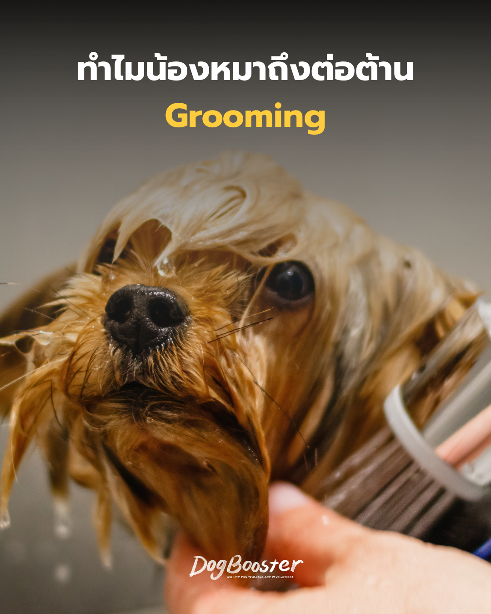

น้องหมาที่บ้านวิ่งออกมาต้อนรับทุกครั้งที่ได้ยินเสียงกุญแจ กระดิกหางใส่ทุกคนที่เดินผ่าน แต่พอเจ้าของเดินไปหยิบผ้าขนหนูกับแชมพู จู่ ๆ ตัวเดียวกันนี้กลับเปลี่ยนไปคนละตัว — หลบไปนอนใต้โต๊ะ แกล้งทำเป็นไม่ได้ยิน หรือถ้าจับตัวได้ก็ตัวเกร็ง หางเหน็บ
เจ้าของหลายคนอาจนึกในใจว่า “ทำไมหมาตัวนี้ถึงเรื่องมากจัง” แต่คำถามที่น่าจะแม่นยำกว่าคือ — เราเคยถามหรือยังว่า สำหรับสุนัขแล้ว การถูกจับ ราดน้ำ และใช้เครื่องมือที่มีเสียงดังใกล้ตัว มันคือประสบการณ์แบบไหนกันแน่
ถ้าลองมองย้อนไปที่บรรพบุรุษของสุนัขในธรรมชาติ จะพบว่าไม่มีขั้นตอนไหนที่ใกล้เคียงกับการยืนนิ่งให้คนราดน้ำ หรือจับเท้ามาตัดเล็บด้วยที่ตัดที่ส่งเสียง “แชะ” เลย สิ่งเหล่านี้เป็นกิจวัตรที่มนุษย์ออกแบบขึ้นมาเพื่อมาตรฐานความสะอาดของเราเอง ไม่ใช่พฤติกรรมที่ระบบประสาทของสุนัขถูกโปรแกรมมาให้รู้สึกปลอดภัยตั้งแต่แรก
ลองแยกกระบวนการ grooming ออกเป็นชิ้น ๆ จะเห็นว่ามีอย่างน้อย 4 องค์ประกอบที่ไปสวนทางกับสัญชาตญาณเอาตัวรอดของสุนัขโดยตรง
พอทั้งสี่อย่างเกิดพร้อมกัน สมองส่วนที่ประเมินภัยของสุนัขอาจตีความว่านี่คือสถานการณ์อันตราย ระดับ คอร์ติซอล และ อะดรีนาลีน จึงพุ่งสูง ร่างกายเข้าสู่โหมด “สู้ หนี หรือแข็งค้าง” พฤติกรรมที่เจ้าของเห็นว่าเป็นการ “ต่อต้าน” แท้จริงแล้วมักเป็นผลลัพธ์ของกระบวนการทางสรีรวิทยานี้ ไม่ใช่การตั้งใจดื้อ
กว่าสุนัขจะถึงจุดที่ดิ้นรุนแรง ขู่ หรือเข้าสู่ภาวะ over-threshold (หูดับ ไม่ตอบสนองต่อคำสั่งใด ๆ) มักมีสัญญาณเล็ก ๆ ให้เห็นมาก่อนเสมอ เจ้าของที่จับสัญญาณเหล่านี้ได้ทัน จะหยุดหรือเปลี่ยนจังหวะก่อนสถานการณ์จะบานปลายได้
วิธีที่หลายบ้านคุ้นเคยคือช่วยกันจับตัวไว้แน่น ๆ แล้วรีบทำให้จบไวที่สุด ซึ่งดูเหมือนจะแก้ปัญหาได้ในวันนั้น แต่ในทางพฤติกรรมศาสตร์ วิธีนี้ใกล้เคียงกับสิ่งที่เรียกว่า flooding คือการให้สัตว์เผชิญหน้ากับสิ่งที่กลัวเต็มรูปแบบโดยไม่มีทางเลือกให้หนี
สิ่งที่มักเกิดขึ้นคือ สุนัขจะหยุดดิ้นในที่สุด แต่นั่นไม่ได้แปลว่าความกลัวหายไป เขาเพียงเรียนรู้ว่าดิ้นไปก็ไม่มีประโยชน์ ซึ่งเป็นภาวะที่เรียกว่า learned helplessness — ความเครียดยังคงอยู่เต็มร่างกาย เพียงแต่ไม่แสดงออกมาทางการเคลื่อนไหวให้เห็นแล้ว และในระยะยาว ความสัมพันธ์ระหว่างสุนัขกับมือที่จับเขาไว้ (ไม่ว่าจะเป็นเจ้าของหรือช่าง) อาจสั่นคลอน จนบางตัวเริ่มแสดงพฤติกรรมป้องกันตัวที่รุนแรงขึ้นทุกครั้งที่ถึงคิว
ในวงการฝึกสุนัขแบบก้าวหน้า มีกรอบแนวคิดหนึ่งที่ถูกพูดถึงอย่างกว้างขวางคือ It's Yer Choice (IYC) ของ Susan Garrett ซึ่งเดิมออกแบบมาเพื่อสอนการควบคุมแรงกระตุ้น โดยให้สุนัขเรียนรู้ด้วยตัวเองว่าความสงบมักนำไปสู่สิ่งดี ๆ หลักคิดนี้นำมาปรับใช้กับ grooming ได้ดีมาก ผ่านสิ่งที่เรียกว่า cooperative care หรือการดูแลแบบให้สัตว์มีส่วนร่วม ไม่ใช่ถูกกระทำฝ่ายเดียว
หัวใจสำคัญคือการมอบ “สัญญาณสื่อสาร” ให้สุนัขใช้บอกความรู้สึก แทนที่จะถูกตรึงไว้ทั้งหมดโดยไม่มีทางออก ตัวอย่างที่ทำได้จริง เช่น
วิธีนี้ไม่ได้หมายความว่าสุนัขจะเป็นฝ่ายควบคุมทุกอย่าง แต่เป็นการสร้างความไว้ใจผ่านการรับฟัง ซึ่งในระยะยาวมักช่วยลดความเครียดสะสมได้จริง และทำให้ grooming ค่อย ๆ กลายเป็นกิจวัตรที่ราบรื่นขึ้นในทุกครั้งถัดไป
การเปลี่ยนความรู้สึกของสุนัขไม่ใช่สิ่งที่เกิดขึ้นได้ในเซสชันเดียว แต่อาศัยหลักการ desensitization (ค่อย ๆ ลดความไวต่อสิ่งเร้า) ทำงานร่วมกับ counter-conditioning (สร้างความรู้สึกบวกทดแทนความกลัวเดิม) ลองไล่ตามลำดับนี้
ลูกสุนัขที่เริ่มฝึกตั้งแต่ช่วง socialization window (ในช่วงหลายสัปดาห์แรกของชีวิต) มักปรับตัวได้ง่ายกว่า แต่สำหรับสุนัขโตที่มีประสบการณ์ไม่ดีติดตัวมา หลักการเดียวกันนี้ยังใช้ได้ผล เพียงแต่ต้องใช้เวลาและความอดทนมากขึ้นเท่านั้น
แนวคิด games-based training ที่เน้นความสนุกและความสมัครใจ สามารถนำมาเป็นตัวช่วยเตรียมความพร้อมได้ดี เช่น
หัวใจของทุกเกมคือ ทำให้สุนัขรู้สึกว่าเขา “เลือก” จะเข้าร่วม ไม่ใช่ถูกบังคับให้ทำตาม
หมาไม่ได้เกิดมาพร้อมความรู้สึกโอเคกับการถูกจับอาบน้ำตัดขน และปฏิกิริยาต่อต้านที่เจ้าของเห็นก็มักไม่ใช่ความดื้อ แต่เป็นความกลัวที่อธิบายได้ทางวิทยาศาสตร์ ข่าวดีคือ ด้วยความเข้าใจ ความอดทน และแนวทาง force-free ที่เปิดโอกาสให้สุนัขมีสิทธิ์เลือก เราสามารถค่อย ๆ เปลี่ยนความทรงจำแย่ ๆ ให้กลายเป็นความไว้ใจ จนวันหนึ่งอาจเป็นน้องหมาที่เดินเข้าหาอ่างอาบน้ำเองด้วยซ้ำ
ข้อมูลในบทความนี้จัดทำขึ้นเพื่อการศึกษาทั่วไป ไม่สามารถทดแทนการประเมินสุนัขของท่านโดยตรงจากผู้เชี่ยวชาญ หากต้องการวางแผนฝึกอย่างเหมาะสมกับพฤติกรรมและสายพันธุ์ของน้องหมา แนะนำให้ปรึกษาทีมผู้เชี่ยวชาญของ DogBooster ก่อนเริ่มโปรแกรมฝึกใด ๆ และหากสุนัขของท่านมีอาการเจ็บปวด ควรปรึกษาสัตวแพทย์ควบคู่ไปด้วย